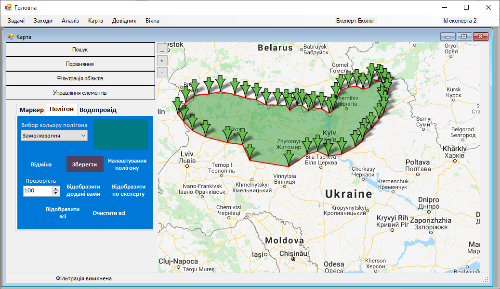
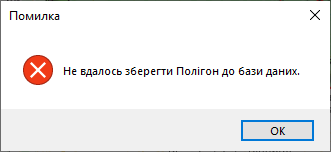
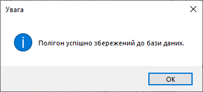

Крок 9. Збереження полігону
Експерт натискає кнопку «Зберегти».
Після цього програма покаже повідомлення про помилку, на якому необхідно натиснути кнопку «ОК».
Або ж програма покаже повідомлення про успішне збереження полігону, на якому необхідно натиснути кнопку «ОК».
